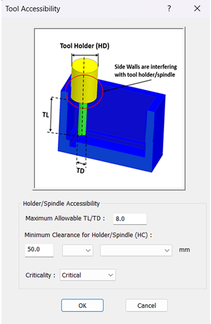
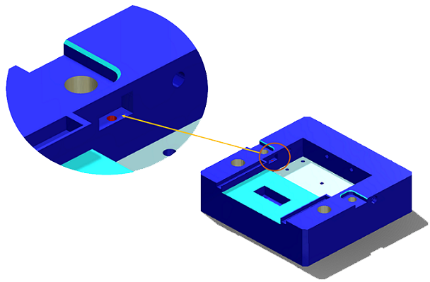
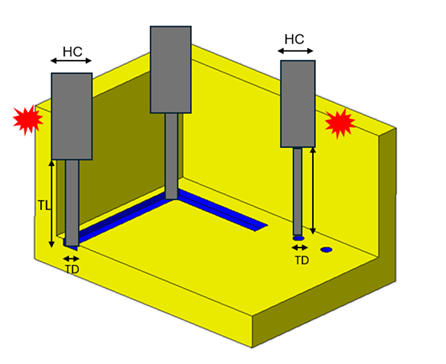

切削工具は、推奨される加工姿勢においてフィーチャーへアクセスできる必要があります。
工具が部品と干渉（衝突）すると、工具と部品の双方が損傷するなどの悪影響につながる可能性があります。場合によっては、これらの干渉が機械オペレーターに対する安全上のリスクとなることもあります。そのため、実際の加工を開始する前に、干渉のないセットアップを確保することは、こうした損傷を防ぐうえで常に推奨されます。
DFMPro は、設計段階で推奨方向を自動的に識別し、ツールホルダーと部品の間で発生し得る干渉をチェックします。さらに、DFMPro はフィーチャーの最小幅および最小側面半径に基づいて、そのフィーチャーで可能な最大工具径（TD：Tool Diameter）を自動計算します。
ルールの動作
ユーザーが TL/TD 比 = 8.0 を設定します。
DFMPro が工具径（TD）を決定：TD は以下の最小値として決定されます。
スロットの最小幅
最小側面半径
例：TD = 5.0 mm、比 = 8.0 の場合、TL = 40 mm
DFMPro が工具長（TL）を計算：TL = TD ×（設定比）
ホルダー逃げチェック：各スロットまたは穴に対して工具長（TL）を決定した後、DFMPro は設定されたホルダー逃げ量（Holder Clearance Value）を計算された工具高さに加算します。続いて、DFMPro はツールホルダーと隣接フィーチャーとの間で干渉が発生しないかをチェックします。干渉が検出された場合、DFMPro は干渉問題としてフラグを立てます。
注記：
側面半径が存在しない不規則なスロットや、最小幅の算出が単純ではないケースでは、DFMPro が工具径を決定できない場合があります。この場合、当該フィーチャーに対して工具アクセス性チェックを実行できない旨が設計者へ通知されます。

加工が困難な、アクセス不能フィーチャーは避けてください。
縦方向の長い側壁に非常に近い位置へ、ポケット、スロット、穴などのフィーチャーを追加しないでください。
ユーザーがアクセス可能フィーチャーに対してホルダー干渉をチェックしたい場合、DFMPro では許容される最大の工具長／工具径比（TL/TD）を設定できます。
本ルールは、以下の失敗カテゴリを個別に表示します：
アクセス不能フィーチャー：工具のアクセス性が確保できず、加工できないフィーチャー。

アクセス不能なフィーチャー／領域
ホルダー干渉：アクセス可能なフィーチャーであっても、ホルダーが隣接フィーチャーと衝突する可能性があるもの。

アクセス可能なフィーチャー - ホルダー干渉
アクセス不能フィーチャーでルールが失敗した場合、ホルダー干渉のチェックは行われません。
注記：
ドリル工具はデータベースで設定されます。ルールマネージャーでドリル径を確認するには、standard hole sizes ルールを編集してください。
解析では、standard hole sizes ルール構成で選択された Unit Selection オプションに基づき、最大ドリル工具径が考慮されます。